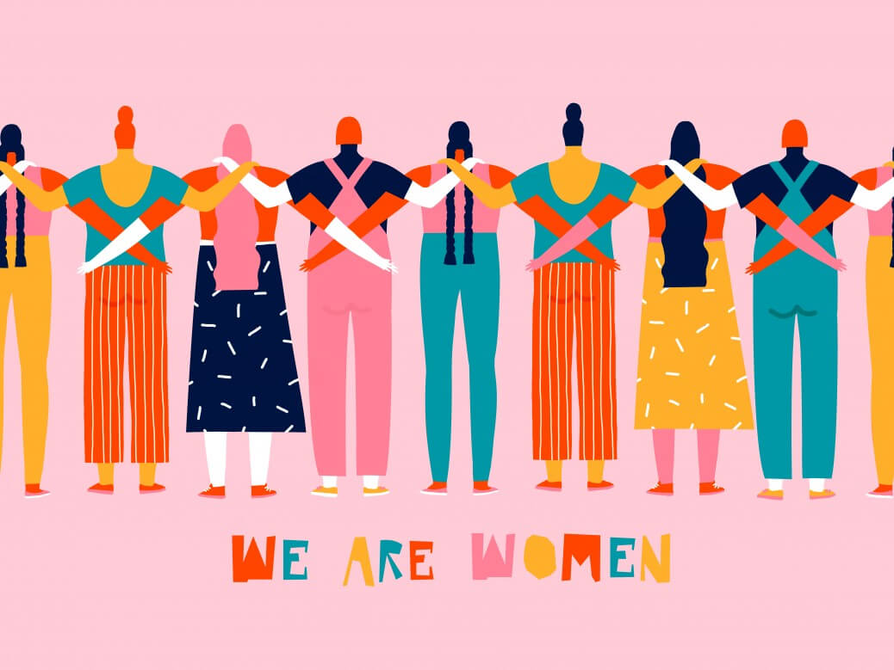
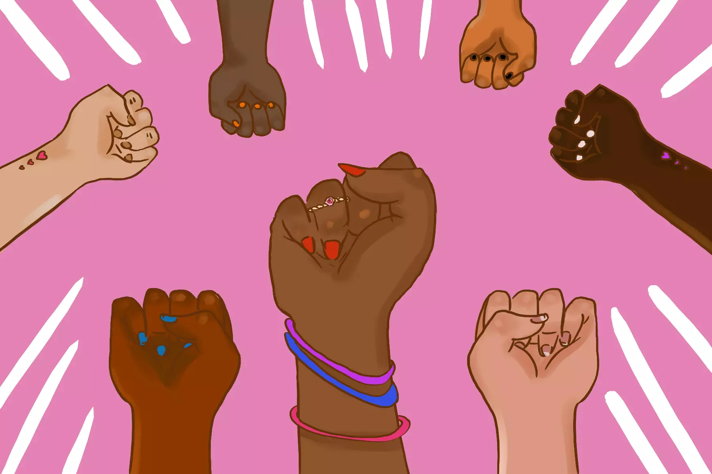

We are all entitled to human rights. These include the right to live free from violence and discrimination;to enjoy the highest attainable standard of physical and mental health; to be educated; to own property; to vote; and to earn an equal wage.
Nevertheless, across the globe many women and girls still face discrimination on the basis of sex and gender. Gender inequality underpins many problems which disproportionately affect women and girls, such as domestic and sexual violence, lower pay, lack of access to education, and inadequate healthcare. For many years women’s rights movements have fought hard to address this inequality, campaigning to change laws or taking to the streets to demand their rights are respected.
Take for example the reproductive systems.
Every woman and girl has sexual and reproductive rights. This means they are entitled to equal access to health services like contraception and safe abortions, to choose if, when, and who they marry, and to decide if they want to have children and if so how many, when and with who. Women should be able to live without fear of gender-based violence, including rape and other sexual violence, female genital mutilation (FGM), forced marriage, forced pregnancy, forced abortion, or forced sterilization. But there’s a long way to go until all women can enjoy these rights. For instance, many women and girls around the world are still unable to access safe and legal abortions. In several countries, people who want or need to end pregnancies are often forced to make an impossible choice: put their lives at risk or go to jail. Sounds terrible? It is.
Gender-based violence is when violent acts are committed against women and LGBTQ+ people on the basis of their orientation, gender identity, or sex characteristics. Gender based violence happens to women and girls in disproportionate numbers.Women and girls in conflict are especially at risk from violence, and throughout history sexual violence has been used as a weapon of war. Globally, on average 30% of all women who have been in a relationship have experienced physical and/or sexual violence committed against them by their partner. Women are more likely to be victims of sexual assault including rape. Violence against women is a major human rights violation. It is the responsibility of a state to protect women from gender-based violence – even domestic abuse behind closed doors, which admittedly, due to the pandemic, rose significantly.
Sexual harassment means any unwelcome sexual behavior. This could be physical conduct and advances, demanding or requesting sexual favors or using inappropriate sexual language. Sexual violence is when someone is physically sexually assaulted. Although men and boys can also be victims of sexual violence, it is women and girls who are overwhelmingly affected.
It might seem like an obvious point, however, we cannot have a free and equal society until everyone is free and equal. In other words, until women enjoy the same rights as men, this inequality is everyone’s problem.
According to the United Nations, “gender equality and the empowerment of women and girls is not just a goal in itself, but a key to sustainable development, economic growth, and peace and security”. Research has shown this to be the case – society gets better for everyone when women’s rights are upheld and taken seriously.
Although grassroots movements have done so much to effect change, when everyone comes together to support women’s rights we can be so much stronger. By working alongside individual activists and campaigners on the ground as well as running our own targeted campaigns, movements such as Amnesty International can form a formidable vanguard in the fight for women’s rights.
Healthy, educated and empowered women have healthy, educated and confident daughters and sons. Gender equality will not only empower women to overcome poverty and live full and productive lives, but will better the lives of children, families and countries as well.
